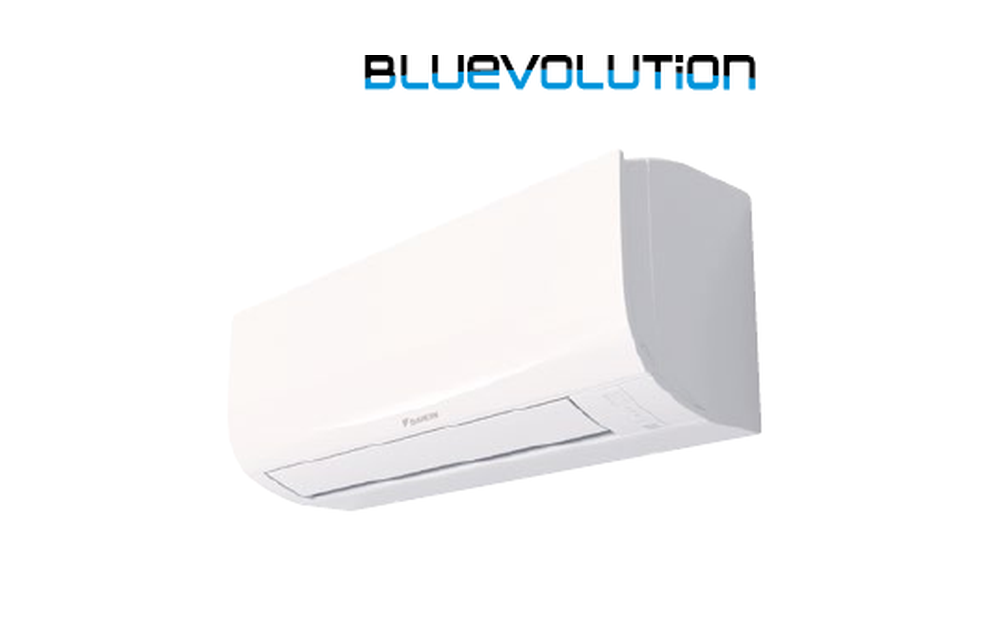

Daikin
Sensira FTXF25F + RXF25F
Auf Lager / kurzfristig verfügbar
typisch für kleinere bis mittelgroße Räume. Set aus Innen- und Außengerät zum Kühlen und Heizen.
- Kühlen und Heizen
- Kompaktes Wandgerät
- Daikin Inverter-Technologie
- R32-Kältemittel
Kühlen A++Heizen A+R32
769 €
inkl. 19 % MwSt. · zzgl. 59 € Versand · ohne Montage